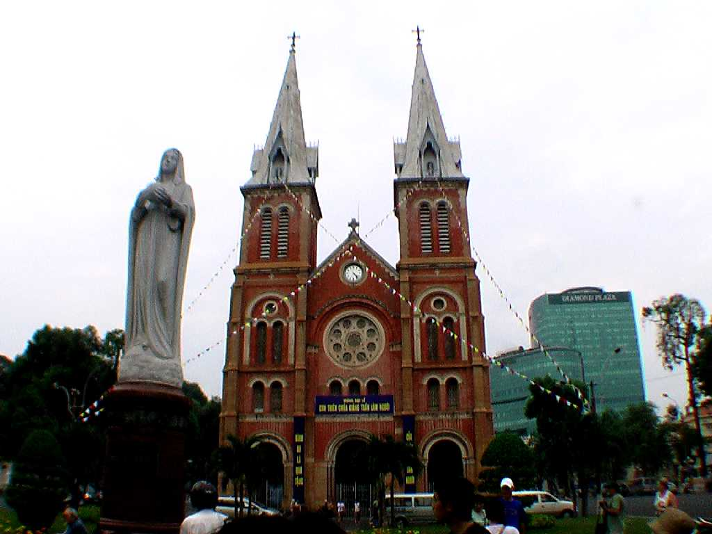
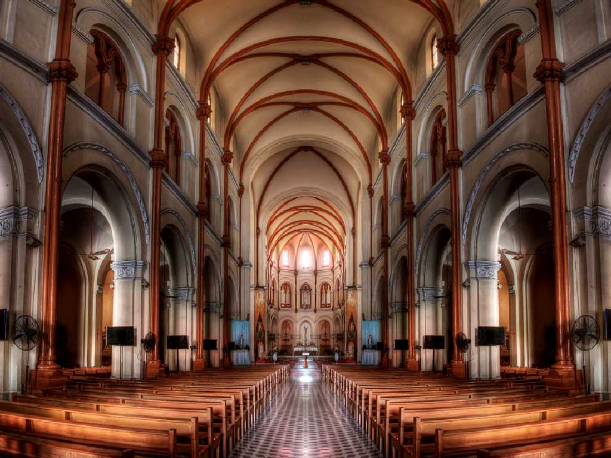
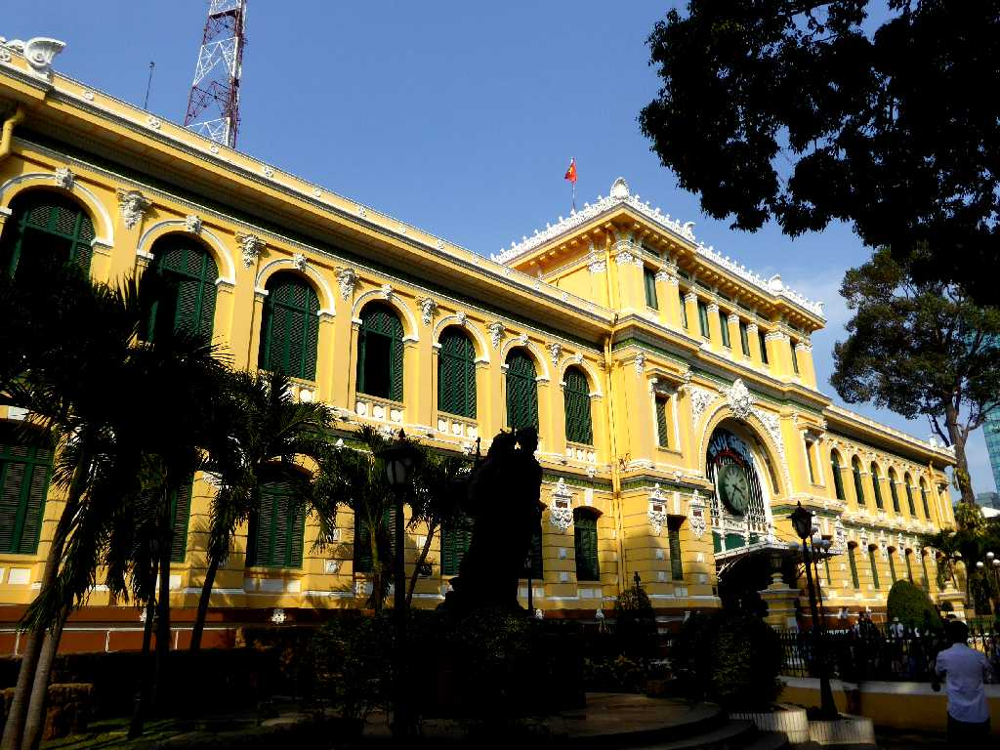
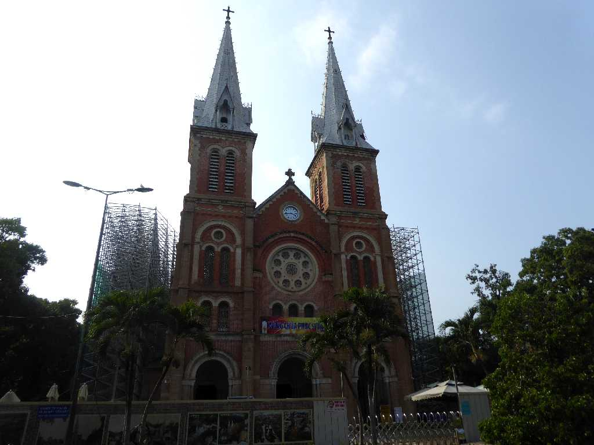

Saigon Notre Dame Basilica Sài Gòn (Ho Chi Minh City) 柴棍 胡志明
古くはクメール人が住む漁村であったが１９世紀後半にフランス領インドシナのもとで急速に発展し東洋のパリとも呼ばれるようになった

Altar Saigon Notre Dame Basilica
市中心にあるサイゴン大教会はフランス統治時代の１８８０年に建てられたネオゴシック様式のカトリック教会
Central Post Office Sài Gòn
フランス統治時代の１８９１年に郵便電信施設としてエッフェルの設計により創られたコロニアル様式のサイゴン中央郵便局

Central Post Office Sài Gòn
１２年ぶりの再訪問で確かに郵便局は外装がピンク色から黄色に塗り替えられていた

Saigon Notre Dame Basilica Sài Gòn
大改修中で入場できず
April 5 2018 Sài Gòn
ハロン湾からメコンデルタまでベトナムを南下する２,０００ｋｍの旅が終わる